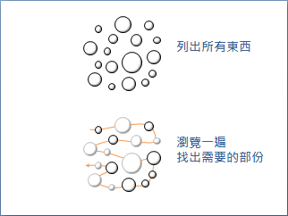
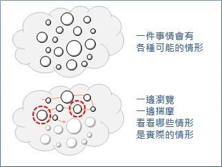
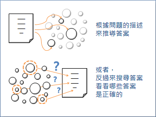

你的第一个程序
写程序其实并不难，下面就是你要写的第一个程序！
你的第一个程序
解释：你的第一个程序
变量
设置一个变量
你的第一个程序
变量
写程序其实并不难，下面就是你要写的第一个程序！
你的第一个程序
解释：你的第一个程序
Search
Search
「搜尋」。列出所有東西，瀏覽一遍，從中找出需要的部份。
實做程式時，可以一邊列出東西，一邊瀏覽，一邊判斷是不是想要的東西；也可以列出全部的東西之後，再進行瀏覽。一旦找到了、找完了所有想要的東西，搜尋就可以即刻停止。
UVa 494 591 10038 10141 10370 10783 356 484 541 10340
舉例：找出數列裡的特定數字
一邊瀏覽數列，一邊尋找特定數字，一旦找到了一個，就停止搜尋。
舉例：找出數列裡的極大值
一邊瀏覽數列，一邊比較數值大小，最後就求出了極大值。
先整理再搜尋
資料先整理過後，搜尋常常會變得簡單。我們可以先將資料依照大小順序排序，或者先將資料置入特別的資料結構當中，讓資料具有特性；然後運用該特性，設計特別的演算法，略過不相關的資料，快速判斷出想要找的資料。
例如排序後使用 Binary Search ，又例如將資料置入 Hash Table 再搜尋等等。
Exhaustive Search
Exhaustive Search （ Brute Force Search ）
中文稱做「窮舉搜尋法」、「窮舉法」，俗稱「暴力搜尋法」、「暴力法」、「暴搜」，而教科書譯作「竭盡式搜尋法」、「蠻力搜尋法」。
窮舉法是枚舉與搜尋兩種方法的結合，大意是：嘗試列舉全部情形、全部數據，一一比對檢查。窮舉法的特色是，所有情況無一遺漏。
窮舉法充分利用了電腦能做快速運算的特性。窮舉對人類來說，是曠日費時的工作；對電腦來說，是駕輕就熟了。很多不容易計算出答案的問題，都可以用電腦做窮舉，而快速的找出正確答案。
窮舉法可以用迴圈、遞迴等方式實作。
UVa 399
Brute Force Search v.s. Direct Method
Brute Force Search 是一一檢驗所有可能的數據或解答， Direct Method 是直接推導出解答。這兩者是完全不相同的。很多人常把這兩個名詞搞混，這裡做個釐清。
特殊的窮舉方式
Backtracking 枚舉多維度數據。 可看做是多維度的Exhaustive Search。 Branch and Bound 枚舉數據區間。 反覆地切割與驗證每個區間，以樹狀進行延伸，逐步將區間變得細緻，最後找出想要的數據。 State Space Search 枚舉所有的狀態，並依照衍生關係整理成樹狀圖或者網狀圖，在圖上搜尋。
Direct Method / Trial and Error
Direct Method ( Straightforward Method )
「直接法」，可以直接算出答案來的問題，例如導個公式算出答案、觀察得到答案、依照流程進行最後得到答案、直接印出答案，這些都算是「直接法」。
直接法口語化的用詞叫做「硬幹」、「硬做」，不太文雅就是了。
UVa 488 10055 10370 10878 10929
Trial and Error
「嘗試錯誤法」、「試誤法」，是一種針對答案來進行 Enumerate 與 Search 的策略。有些困難的問題，難以直接推導答案，既然推導不出來，就慢慢測試答案、慢慢驗算吧──確立答案的範圍，枚舉所有可能的答案，再從中搜尋正確答案。
試誤法注重的是題目的限制條件，以及答案的數值範圍，這兩者直接影響到空間複雜度與時間複雜度。問題的限制越嚴苛，答案的數值範圍越小，那麼試誤法就會越簡單越快。
直接法和試誤法一陰一陽，互為正反。直接法是由題目本身下手，進而推導出答案；試誤法則是逆向思考，從答案來下手，進而迎合題目需求。
大部分的問題，都無法直接製作出一個計算流程直接算出答案；一個問題，也不一定只有恰好一個答案，而有各式各樣的答案。這種情況下，可以採用試誤法來解決問題。
延伸閱讀： One-way Function
「單向函數」是一種特別的函數，給定輸入很容易算出輸出，但是給定輸出卻很難算出輸入。
舉例來說，令一個函數的輸入是兩個質數，輸出是兩個質數的乘積。給定兩個質數可以輕易的在多項式時間內算出乘積，然而給定兩質數的乘積卻需要指數時間才能完成質因數分解。
如果給定一個單向函數的輸入，求其輸出，就適合用直接法，套用函數快速算得答案；如果給定一個單向函數的輸出，求其輸入，就適合用試誤法，嘗試各種輸入並套用函數快速驗證答案。